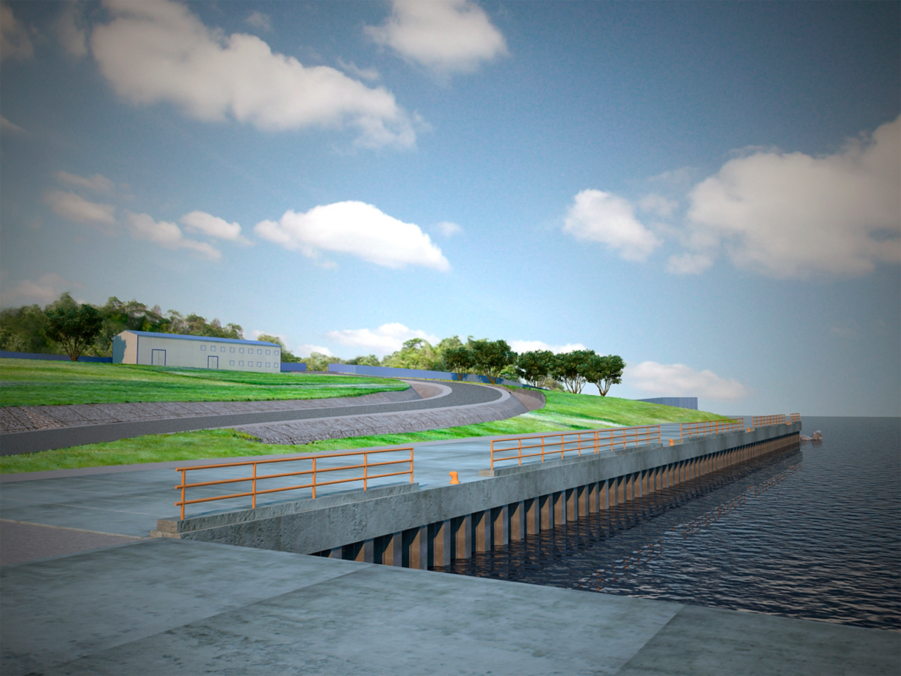

Проектирование и восстановление
Технические решения для изменения, ремонта и дальнейшей безопасной эксплуатации портовых гидротехнических сооружений.

01 / Геодезия
Проекты и устройство геодезических сетей
Значения смещений, полученные с помощью геодезической съемки, позволяют судить о напряженном состоянии грунтов оснований, а характер их развития дает материал для прогнозирования изменения несущей способности конструкций и ГТС в целом.
Цикл работ включает
- рекогносцировку опорной и деформационной геодезических сетей;
- разработку проекта сетей;
- изготовление и устройство новых пунктов и деформационных марок;
- привязку опорных пунктов к государственной геодезической сети;
- измерения, камеральную обработку и составление отчета.
02 / Проект
Проекты реконструкции, ремонта и восстановления
Реконструкция, ремонт и восстановление объектов инфраструктуры морского и внутреннего водного транспорта выполняется для продления срока безаварийной эксплуатации и восстановления несущей способности.
Проект позволяет
- увеличить пропускную способность объекта;
- обеспечить возможность замены перегрузочной техники;
- повысить значения нормативных эксплуатационных нагрузок;
- восстановить несущую способность отдельных элементов и ГТС в целом.
При выборе схемы учитываются фактическое состояние сооружения, гидрологические и инженерно-геологические условия, а также возможность поэтапного вывода ГТС из эксплуатации.
03 / Реализация
Реконструкция, восстановление и дооснащение
Восстановительные мероприятия направлены на повышение эксплуатационных характеристик поврежденных и морально устаревших причалов, а также увеличение или восстановление несущей способности сооружений.
- максимальное использование существующих конструкций;
- учет новых условий работы гидротехнического сооружения;
- обоснование демонтажа конструкций и воздействия на обратную засыпку;
- поэтапное выполнение работ с учетом эксплуатации объекта.